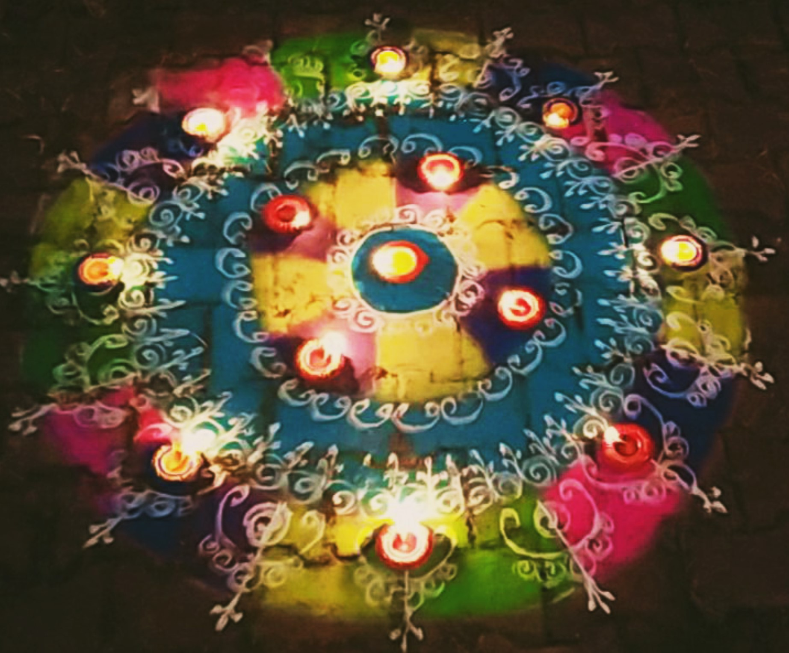
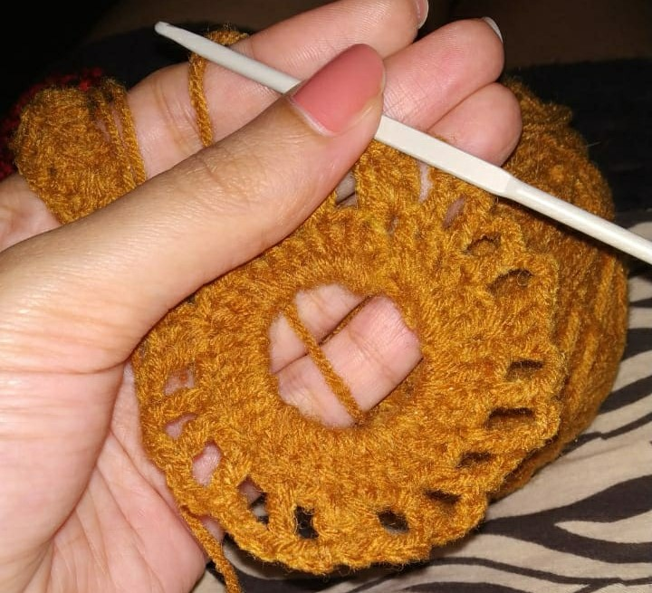
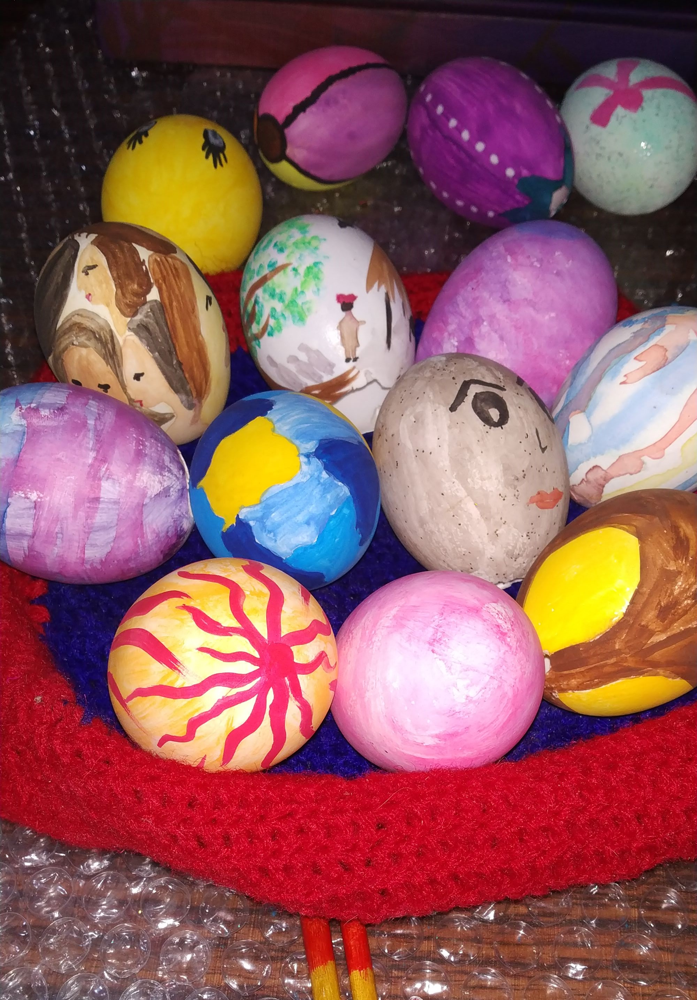

Chabila Borkar
M. Tech in Software Engineering
Department of Computer Science & Information Systems,
Work Integrated Learning Programme,
BITS Pilani
Contact Details:
Email: 2020mt93700@wilp.bits-pilani.ac.in
Profile
IT Professional with 3.4 years of software industry experience currently working at Infosys Limited, Pune.
Also, an active member of Cultural wing for fashion and styling at Infosys.
Education
| 2018 | B.E in Computer Engineering from Padre Conceicao College of Engineering, Goa |
Work Experience
| 2018 till date | Senior Systems Engineer at Infosys Limited, Pune |
Get to know me..
I have completed my graduation and schooling from my birth place, that is Goa, India.
Languages: Proficient in English, Hindi, Marathi and my mother tongue is Konkani.
Hobbies and Interests: I have vast interest streams that make me versatile and a quick learner.
Very fond of travelling and i love animals, i have a lot of pets.
Snapshots of my hobbies:



Thats all about me!!!